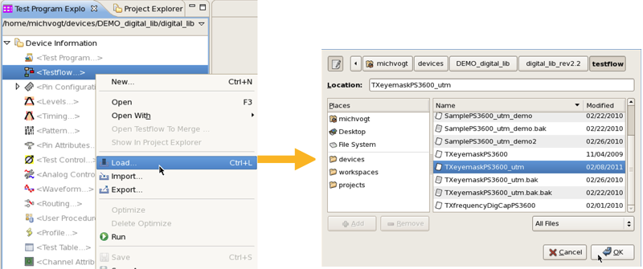

Loading a testflow and all setup components
If your test setup is based on a testflow and you want to edit your setup data, you do not need to load each single configuration file as Pin Configuration, Levels, Timing etc.. You can load all setup data in one step as described in this topic.
To load a test flow and all setup files:
- In the Test Program Explorer View highlight the Test Flow item, right-click and select Load... .
- In the next window select the testflow and click OK.

- In the Test Program Explorer highlight the Test Flow item, right-click and select Load All Setups.
- All setup data are loaded.